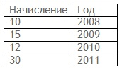

Май 23, 2023
Используем XMLAGG вместо LISTAGG
У функции listagg есть ограничение на длину генерируемой строки. Чтобы обойти это ограничение, используем функцию xmlagg, которая возвращает clob, а не varchar2.
select
xmlagg(xmlelement(parent, t.column1||' '||t.column2,chr(13)).extract('//text()')).getClobVal()
from table t;
Апрель 12, 2023
Новые возможности SQL в Oracle Database 21c
Функция ANY_VALUE
Функция ANY_VALUE позволяет не включать поле в список GROUP BY, по которым проводится группировку. Значение в колонке ANY_VALUE выбирается первым со значением NOT NULL. Ключевое слово DISTINCT допускается использовать в ANY_VALUE, но оно не функционирует.
select
d.deptno,
any_value(DISTINCT d.dname) AS deptname,
any_value(e.ename) AS ename,
count(e.empno) AS employee_count
from
dept d
left outer join
emp e
on d.deptno = e.deptno
group by
d.deptno order by1;
Улучшенный синтаксис аналитических функций
WINDOW
В предыдущих версиях оконная рамка определялась непосредственно в вызове аналитической функции. В Oracle 21c оконная рамка может быть определена отдельным предложением, что позволяет использовать её одновременно в несколькох аналитических функциях. Также можно определить несколько оконных рамок. Оконную рамку можно расширять по разному в кажом месте использования.
select
empno,
deptno,
sal,
first_value(sal) over (w1 rows between unbounded preceding and current row) as lowest_in_dept,
first_value(sal) over w2 as highest_in_dept,
rank() over w1 as sal_rank_in_dept
from
emp
window w1 as (partition by deptno order by sal),
w2 as (partition by deptno order by sal desc);
GROUPS
Дополнительно к ROWS и RANGE было добавлено ещё одно - GROUPS. При использовании GROUPS данные делятся на группы на основе упорядоченных значений. Текущая строка является частью текущей группы, поэтому ссылки на предыдущую или следующую относятся к предыдущей или следующей группе, а не к конкретным строкам. Подобна RANGE количество строк в окне не известно до тех пор, пока данные не будут упорядочены.
select
row_number () over (
order by
sal) as row_order,
sal,
avg(sal) over w1 as avg_rows,
avg(sal) over w2 as avg_groups,
avg(sal) over w3 as avg_range
from
emp window w1 as (order by sal rows between 1 preceding and current row),
w2 as (order by sal groups between 1 preceding and current row),
w3 as (order by sal range between 1 preceding and current row);
EXCLUDE
Ключевое слово EXCLUDE имеет несколько опций, позволяющих исключить различные строки из оконных рамок.
- EXCLUDE NO OTHERS: ничего не исключает. Равносильно отсутствию слова EXCLUDE.
- EXCLUDE CURRENT ROW: исключает только текущую строку.
- EXCLUDE GROUP: исключает текущую группу, текущую строку и все остальные строки с таким же значением.
- EXCLUDE TIES: удаляет все строки с таким же значением, как у текущей строки.
EXCLUDE может использоваться с ROWS, RANGE и GROUPS.
select
row_number () over w1 as row_order,
value,
avg(value) over (w1 rows between 1 preceding and 1 following exclude current row) as ex_current_row,
avg(value) over (w1 rows between 1 preceding and 1 following exclude group) as ex_group,
avg(value) over (w1 range between unbounded preceding and current row exclude ties) as ex_ties
from
t1 window w1 as (order by value);
Таблица Blockchain
В Oracle Database 21c появился новый тип таблицы - блокчейн таблица - это защищенная от несанкционированного доступа таблица, предназначенная только для вставки, с соответствующим периодом хранения строк и самой таблицы. Строки организованы в цепочки, где каждая строка содержит хэш-сумму данных, содержащихся в строке, и хэш-сумму данных предыдущих строк.
Пример создания таблицы:
create blockchain table bct_t1 (
id number,
fruit varchar2(20),
quantity number,
created_date date,
constraint bct_t1_pk primary key (id) )
no drop until 0 days idle
no delete until 16 days after insert
hashing using "SHA2_512" version "v1";
- NO DROP : таблица не может быть удалена (только если в ней уже есть строки). Таблица удалится при удалении схемы.
- NO DROP UNTIL number DAYS IDLE : таблица не может быть удалена пока не пройдет указанное количество дней, в течении который не будет вставлена ни одна строка.
- NO DELETE определяеть срок хранения строк - как долго каждая строка будет защищена от удаления.
Тип данных JSON
В таблице можно создавать колонки с типом данных JSON.
create table t1 (
id number generated always as identity,
json_data json,
constraint ta_pk primary key (id)
);
SQL Macros
Использование вызова функци в SQL-запросах замедляет выполнение запроса из-за переключения контекстов SQL и PL/SQL. Для решения этой проблемы было придумано ключевое слово sql_macro, которое заставляет опитизатор выполнять подстановку во время оптимизации запроса.
create or replace function calculate_tax(p_value number)
return varchar2 sql_macro(scalar) is
begin
return q'{ p_value * 0.2 }';
end;
/
Напишите SQL, используя таблицу “A”, возвращающий ровно 100 строк со значениями чисел от 1 до 100 в каждой строке. Ограничения: 1) не использовать connect by; 2) не использовать union/union all; 3) в запросе можно использовать только таблицу “A”, в которой ровно одно поле “COL“ с текстовым значением ‘X’, и в таблице “A” содержится 7 строк.
select rownum from a cross join a cross join a where rownum <= 100;
Апрель 12, 2023
Варианты выбора уникальных значений.
Предложите варианты отбора уникальных значений поля “name” из таблицы “A” (в СУБД только эта одна таблица).
1. select distinct name from a;
2. select name from a group by name;
3. select name from (select name,
row_number() over (partition by name order by name) as rn
from a) where rn = 1;
4. select name from a union select name from a;
5. select name from (select name,
lag(name) over (partition by name order by name) as lg
from a) where lg is null;
Напишите SQL запрос, возвращающий данные поля “COL” с четными значениями из таблицы “A”, в которой 100 строк (значения поля в строках это целое число от 1 до 100). Ограничения: 1) не использовать ключевое слово where.
select col from a group by col having mod(col,2) = 0;
Март 19, 2023
Переворот таблицы без использования PIVOT.
Предложите SQL (без использования PIVOT) для получения клиентских атрибутов (таблица: ATTR; поля: CLIENT_ID, PARAM_NAME, PARAM_VALUE; первичный ключ: ID, PARAM_NAME; всего различных параметров 100: от ‘p1’ до ‘p100’) в строку (то есть один клиент – одна строка). На выходе должно быть 101 поле: CLIENT_ID, P_1, …, P_100.
/* instead of max() you might use any_value() in oracle 21c */
select
client_id,
max(decode(param_name,'p1', param_value)) as p1,
max(decode(param_name,'p2', param_value)) as p2,
max(decode(param_name,'p3', param_value)) as p3,
…
max(decode(param_name,'p100', param_value)) as p100
from attr
group by client_id;
Март 18, 2023
Удаление дубликатов из таблицы.
Удалите дубликаты из таблицы без промежуточных таблиц, одним запросом.
Таблица:
create table t(col varchar2(3));
insert into t(col) values('AAA');
insert into t(col) values('BBB');
insert into t(col) values(null);
insert into t(col) values('BBB');
insert into t(col) values('BBB');
insert into t(col) values('CCC');
commit;
delete from t
where rowid in (select rowid from
(select col, row_number() over (partition by col order by col) as rn from t)
where rn > 1);
Как можно было бы эффективно написать запрос, чтобы получить результаты, аналогичные оконным функциям, представленным ниже?
SELECT
RANK() OVER (PARTITION BY course ORDER BY mark DESC) AS rank_,
DENSE_RANK() OVER (PARTITION BY course ORDER BY mark DESC) AS dense_rank_,
ROW_NUMBER() OVER (PARTITION BY course ORDER BY mark DESC) AS row_number_,
course, mark, name
FROM student ORDER BY course, mark DESC;
CREATE TABLE student(course varchar2(10), mark number, name varchar2(10));
INSERT INTO student VALUES
('Maths', 60, 'Thulile'),
('Maths', 60, 'Pritha'),
('Maths', 70, 'Voitto'),
('Maths', 55, 'Chun'),
('Biology', 60, 'Bilal'),
('Biology', 70, 'Roger');
COMMIT;
| rank_ |
dense_rank_ |
row_number_ |
course |
mark |
name |
| 1 |
1 |
1 |
Biology |
70 |
Roger |
| 2 |
2 |
2 |
Biology |
60 |
Bilal |
| 1 |
1 |
1 |
Maths |
70 |
Voitto |
| 2 |
2 |
2 |
Maths |
60 |
Thulile |
| 2 |
2 |
3 |
Maths |
60 |
Pritha |
| 4 |
3 |
4 |
Maths |
55 |
Chun |
Вариант решения:
with stds as (
select course, mark, name
,(select count(mark) from students t where t.course = e.course and t.mark = e.mark) as sign
,(select count(distinct mark)
from students t where t.course = e.course and t.mark >= e.mark) as dense_rank_
,(select count(1)
from students t where t.course = e.course and t.mark||t.name >= e.mark||e.name) as row_number_
from students e)
select
case when sign > 1 then dense_rank_ else row_number_ end as rank_
,dense_rank_
,row_number_
,course, mark, name
from stds
order by course, mark desc, name desc;
Март 17, 2023
Отличия NOT EXISTS & NOT IN ?
В чем есть логическое отличие использования подзапросов в NOT EXISTS и логическом операторе NOT IN (...) в следующих двух SQL-запросах ?
SELECT *
FROM facts f
WHERE f.id NOT IN (SELECT idnum FROM dict);
SELECT *
FROM facts f
WHERE NOT EXISTS (SELECT 1 FROM dict d WHERE d.idnum = f.id);
Ответ: если подзапрос (select idnum from dict) в запросе с NOT IN возвращает хотя бы одно значение NULL, то всё логическое выражение становится ложным, т.е. весь запрос ничего не вернёт. При использовании EXISTS, значения NULL обрабатываются корректно, т.е запрос вернёт какие-то строки при их наличии.
Я бы сказал, что речь идёт о некоем баге, так как при использовании подзапроса в логическом IN знечение NULL не оказывает такого фатального эффекта, т.е. логическое условие выполняется как обычно логично корректно.
Март 17, 2023
Генерация чисел с пропусками
Сформировать выборку, состоящую из одной колонки, в которой расположены последовательные числовые значения от 1 до 500. После каждой 5-й строки результата должна быть пустая строка. Реализовать на Oracle SQL (без использования PL/SQL).
SELECT decode(mlvl, 0, NULL, mlvl) AS vals
FROM (SELECT decode(MOD(LEVEL / 2 - 0.5, 5), 0, 0, LEVEL / 2) mlvl
FROM dual
WHERE LEVEL > 1
CONNECT BY LEVEL <= 1000)
WHERE trunc(mlvl) = mlvl
OR mlvl = 0;
Март 17, 2023
Объединение данных из двух источников
Используя один из JOIN методов объединения вывести не повторяющиеся данные из двух источников.
SELECT
s.n,
b.n,
nvl(s.n, b.n)
FROM
ts s
FULL JOIN tb b ON s.n = b.n
WHERE
s.n IS NULL
OR b.n IS NULL;
Март 17, 2023
Использование PARTITION LEFT JOIN
Есть таблица с перечнем временных зон (days):
Есть данные о начислениях по абоненту по временным зонам (usrs):
Необходимо получить результат: если начисления по абоненту по данной временной зоне не было, то выдавать название абонента, временную зону и начисление, равное 0. Т.е.:
SELECT u.ur,
d.name,
nvl(u.n, 0) as val
FROM days d
LEFT JOIN usrs u PARTITION BY(u.ur) ON d.name = u.d;
Есть таблица purchase с информацией о покупках. Поля pr_name, pr_count, pr_price, pr_date означают наименование товара, количество, цену за единицу и дата покупки товара. Другие поля не рассматриваются для упрощения. Необходимо найти топ 5 товаров за каждый день, купленных за последние 7 дней. Топ означает максимальную продажу, выраженную в прибыли: количество * цену.
select pr_date
,pr_name
,pr_sum
,prank
from (select trunc(pr_date) as pr_date
,pr_name
,sum(pr_count * pr_pice) as pr_sum
,row_number() over(partition by trunc(pr_date)
order by sum(pr_count * pr_pice) desc) as prank
from purchase
where trunc(pr_date) > trunc(sysdate - 7)
group by trunc(pr_date)
,pr_name)
where prank <= 5;
В таблице marks есть поле usr с кодом пользователя и поле mrk с оценкой. Для упрощения, другие поля не рассматриваются. Задача: вывести пользователей, у которых такой же уникальный набор оценок, как у пользователя u2.
with agg as
(select distinct mrk
from marks
where usr = 'u2')
select m.usr
from marks m
left join agg a on a.mrk = m.mrk
having count(m.mrk) = count(a.mrk)
and m.usr <> 'u2'
group by m.usr;
Март 17, 2023
Рассчитать стоимости возможных маршрутов
На информационной панели представлено несколько прямых маршрутов. У каждого своя стоимость. Есть маршруты, по которым доехать на автобусе с пересадками выгоднее, чем прямой рейс. Задача: написать SQL-запрос, который выводит все возможные маршруты начиная с города указанного, как место отправления. Для каждого маршрута необходимо подсчитать стоимость. Если есть несколько маршрутов до одного пункта назначения, вывести самый дешёвый из них. Обратные маршруты не выводить.
Автобусные маршруты представлены в виде таблицы:
| ID |
ORIGIN |
DESTINATION |
COST |
| 1 |
MSO |
SPB |
500 |
| 2 |
MSO |
KRD |
200 |
| 3 |
MSO |
SRG |
400 |
| 4 |
KRD |
SRG |
100 |
| 5 |
KRD |
RVD |
200 |
| 6 |
RVD |
VVK |
1000 |
| 7 |
VVK |
OCN |
50 |
Результат работы запроса должен выглядеть аналогично этому:
with function getpathsum(sumpath varchar2) return number is v_res number;
begin
with liststr as
(select regexp_substr(sumpath, '[^/]+', 1, level) c1
from dual
connect by level <= regexp_count(sumpath, '/'))
select sum(cost)
into v_res
from liststr
,busroutes
where origin || '-' || destination = c1;
return v_res;
end;
busroutes_cost as(
select cbr
,path
,cost
,getpathsum(path) as routecost
from (select connect_by_root(f.origin) || '-' || f.destination as cbr
,sys_connect_by_path(f.origin || '-' || f.destination, '/') as path
,f.cost
from busroutes f
connect by prior f.destination = f.origin)),
busroutes_cost_sort as (
select cbr
,path
,routecost
,row_number() over(partition by cbr order by routecost) as rn
from busroutes_cost)
select cbr
,path
,routecost
from busroutes_cost_sort
where rn = 1;
Разбор запроса.
Следующий подзапрос возвращает все возможные маршруты:
select connect_by_root(f.origin) || '-' || f.destination as cbr
,sys_connect_by_path(f.origin || '-' || f.destination, '/') as path
,f.cost
from busroutes f
connect by prior f.destination = f.origin
Выражение connect_by_root(f.origin) || '-' || f.destination as cbr представлет начало и окончание маршрута.
Выражение sys_connect_by_path(f.origin || '-' || f.destination, '/') as path представлет все прямые рейсы, входящие в маршрут.
Встроенная в запрос функция рассчитывает стоимость каждого маршрута. Функция принимает значение в виде /MSO-KRD/KRD-RVD, ищет стоимость каждого прямого маршрута и суммирует их.
with function getpathsum(sumpath varchar2) return number is v_res number;
begin
with liststr as
(select regexp_substr(sumpath, '[^/]+', 1, level) c1
from dual
connect by level <= regexp_count(sumpath, '/'))
select sum(cost)
into v_res
from liststr
,busroutes
where origin || '-' || destination = c1;
return v_res;
end;
Функция проставляет порядковый номер в пределах уникального маршрута, предварительно отсортировав их по стоимости: 1 - самому дешёвому маршруту. Далее, выбираются маршруты, у которых rn = 1
,row_number() over(partition by cbr order by routecost) as rn
Март 17, 2023
Сгруппировать маски номеров
Сотрудник вводит несколько масок для номеров сотовых телефонов. Формат: 89087ХХХХХХ, 8908673ХХХХ, 890867ХХХХХ и т.п.
Необходимо исключить из списка те маски, которые входят в более широкий спектр номеров. Например в 890867ХХХХХ входят 8908671ХХХХ и 8908672ХХХХ. В результате должно остаться только 890867ХХХХХ.
Решение 1:
WITH list_str AS
(SELECT regexp_substr('8908673,89086759,89086737,8908673,890867597', '[^,]+', 1, LEVEL) cl
FROM dual
CONNECT BY LEVEL <= regexp_count('8908673,89086759,89086737,8908673,890867597', ',') + 1)
SELECT DISTINCT (SELECT MIN(t.cl) keep(dense_rank FIRST ORDER BY t.cl)
FROM list_str t
WHERE instr(ts.cl, t.cl) = 1) AS roots
FROM list_str ts;
Решение 2:
WITH xml_root AS
(SELECT regexp_substr('8908673,89086759,89086737,8908673,890867597', '[^,]+', 1, LEVEL) cl
FROM dual
CONNECT BY LEVEL <= regexp_count('8908673,89086759,89086737,8908673,890867597', ',') + 1)
SELECT DISTINCT cl
FROM (SELECT cl,
connect_by_isleaf AS root
FROM xml_root t CONNECT BY nocycle instr(PRIOR t.cl, t.cl) = 1)
WHERE root = 1;
Март 17, 2023
Нарастающий итог с условием
Есть таблица (hnull) с начислениями какой-либо величины за каждый год:

Необходимо без применения PL/SQL посчитать величину начисления нарастающим итогом (growth) в порядке увеличения года (year). При этом если начисление текущего года (val) меньше нарастающего итога предыдущих годов, то этот месяц не вносит свой вклад в нарастающий итог. Т.е. результат будет:
SELECT val, year, growth
FROM hnull
MODEL
DIMENSION BY (YEAR)
MEASURES (val, 0 growth)
RULES(
growth [YEAR] = case
when val[cv()] < nvl(growth[cv()-1],0) then growth[cv()-1]
else
val[cv()] + nvl(growth[cv()-1],0)
end
)
ORDER BY YEAR;
Есть матрица расписания запусков:
Первая строка – 15-и минутные интервалы, вторая строка часовые интервалы, третья строка дни недели, четвертая дни месяца, пятая месяцы года. С помощью данной матрицы задается периодичность запусков.
Требуется написать функцию на Oracle PL/SQL, которая бы возвращала дату следующего запуска (тип Date) от двух входных параметров:
Первый параметр (тип Date): дата, от которой ведется отчет;
Второй параметр (тип Varchar2): это текстовая переменная, в которой перечислены все выбранные ячейки. Ячейки разделены «,» (запятой), а строки разделены «;» (точкой с запятой), например, для данного рисунка расписание будет выглядеть следующим образом: 0,45;0,4,8,12,17,22;2,6;1,2,3,4,5,11,18,24;1,2,3,9,11;
Контрольный пример:
Дата отсчета: 09.07.2010 23:36
Строка: 0,45;12;1,2,6;3,6,14,18,21,24,28;1,2,3,4,5,6,7,8,9,10,11,12;
Результат: 18.07.2010 12:00
Примечание. В данном примере, используется американский календарь, в котором 1 – это воскресенье, 2 – понедельник и т.д.
DECLARE
p_interval VARCHAR2(250);
d1 TIMESTAMP := SYSDATE;
d2 TIMESTAMP := d1;
p_result_day TIMESTAMP;
v_byminute VARCHAR2(50);
v_byhour VARCHAR2(50);
v_byweekday VARCHAR2(50);
v_bymontday VARCHAR2(50);
v_bymonth VARCHAR2(50);
v_slr_name VARCHAR2(30) := 'slr' || to_char(systimestamp, 'yyymmddhh24missff');
BEGIN
p_interval := '0,15,45;0,4,8,12,17,22;2,4,5,6;1,2,3,4,5,11,18,24;1,2,3,9,11;';
v_byminute := regexp_substr(p_interval, '[^;]+', 1, 1);
v_byhour := regexp_substr(p_interval, '[^;]+', 1, 2);
v_byweekday := regexp_substr(p_interval, '[^;]+', 1, 3);
v_bymontday := regexp_substr(p_interval, '[^;]+', 1, 4);
v_bymonth := regexp_substr(p_interval, '[^;]+', 1, 5);
-- преобразуем дни в наименования
SELECT listagg(regexp_substr('SUN|MON|TUE|WED|THU|FRI|SAT', '[^|]+', 1, dy),',') within GROUP(ORDER BY dy)
INTO v_byweekday
FROM (SELECT regexp_substr(v_byweekday, '[^,]+', 1, LEVEL) dy
FROM dual
CONNECT BY LEVEL <= regexp_count(v_byweekday, ',') + 1);
-- создаем уникальный календарь
dbms_scheduler.create_schedule(schedule_name => v_slr_name,
repeat_interval => 'FREQ=YEARLY;BYMONTHDAY='||v_bymontday||';BYDAY=' || v_byweekday||';BYHOUR='||v_byhour||';BYMINUTE='||v_byminute);
dbms_scheduler.evaluate_calendar_string(calendar_string => v_slr_name,
start_date => d1,
return_date_after => d2,
next_run_date => p_result_day);
dbms_output.put_line('Next date is ' || to_char(p_result_day, 'dd.mm.yyyy hh24:mi:ss'));
-- удаляем созданный календарь
dbms_scheduler.drop_schedule(schedule_name => v_slr_name);
END;
Таблица статистических данных по маршрутизаторам, описывается так:
CREATE TABLE tld(recdate DATE, -- час, к которому относится строка статистики
objname CHAR(4 CHAR), -- имя маршрутизатора
traf NUMBER, -- трафик маршрутизатора
counter1 NUMBER, -- число занятых каналов маршрутизатора
CONSTRAINT test_peak_hour_pk primary key(recdate, objname));
Статистика снимается с маршрутизаторов каждый час и recdate указывает начало этого часа (т.е. всегда в 0 минуту и 0 секунду часа).
В некоторые часы статистика может отсутствовать.
Отчетный интервал времени, заданный двумя моментами времени, включительно: '2011-04-11 00:00' и '2011-04-13 00:59'.
Необходимо вывести все интервалы отсутствия данных в таблице по каждому объекту в пределах отчетного интервала.
Выборка должна содержать поля recdate, nехт_recdate, objname, где recdate и next_recdate представляют границы интервала отсутствия данных (включительно) и имеют формат вида '2011-04-12 15:00' и '2011-04-12 15:59' соответственно. Выборка должна быть отсортирована по возрастанию по объекту и затем по дате.
Например, для отчетного интервала сегодня с 0:00 по 23:59 при наличии данных в 1,2 и 12 часы для объекта Х, его интервалы отсутствия данных будут следующими (3 строки): [0:00;0:59;X], [3:00;11:59;X], [13:00;23:59;X].
WITH tl AS
(SELECT DISTINCT objname || to_char(tlp.st, 'dd.mm.yyyy hh24:mi:ss') AS ost,
objname || to_char(tlp.ed, 'dd.mm.yyyy hh24:mi:ss') oed,
tlp.st,
tlp.ed,
objname
FROM tld,
(SELECT :st_dt + (LEVEL - 1) / 24 AS st,
:st_dt + LEVEL / 24 AS ed
FROM dual
CONNECT BY LEVEL <= (:ed_dt - :st_dt) * 24) tlp
WHERE tld.recdate >= :st_dt
AND tld.recdate <= (:ed_dt - 59 / (24 * 60))
MINUS
SELECT objname || to_char(recdate, 'dd.mm.yyyy hh24:mi:ss'),
objname || to_char((recdate + 1 / 24), 'dd.mm.yyyy hh24:mi:ss'),
recdate st,
(recdate + 1 / 24) ed,
objname
FROM tld
WHERE recdate >= :st_dt
AND recdate <= :ed_dt)
SELECT MIN(st),
MAX(ed) - 1 / (24 * 60),
objname
FROM (SELECT ost,
oed,
st,
ed,
objname,
connect_by_root(ost) AS pr
FROM tl
CONNECT BY ost = PRIOR oed
START WITH ost IN (SELECT ost
FROM (SELECT ost,
(st - nvl(lag(st) over(ORDER BY objname, st), st)) * 24 AS pr
FROM tl)
WHERE pr != 1))
GROUP BY objname, pr
ORDER BY objname, MIN(st);
Переменные :st_dt - дата начала интервала, :ed_dt - дата окончания интервала
Апрель 11, 2023
Oracle Warehousing: использование IOT для миграции данных
Основное отличие индекс-организованной таблицы в том, все данные могут храниться в структуре индекса. Это свойство полезно использовать в том случае, если в таблице очень много строк и очень мало колонок, которые необходимо использовать в запросе. Польза будет проявляться в экономии места на диске: ИОТ будет занимать меньше места, чем обычная таблица с данными и индекс.
Такая особенность полезна в миграции данных. Например, когда необходимо использовать большую remote таблицу в сложном пересчёте значений в локальных таблицах. Не будем при каждом пересчёте значений в очередной таблице загружать несколько гигабайт данных с удалённой таблицы. Возьём только те столбцы, которые участвуют в пересчёте и зальём их в локальную индекс-организованную таблицу.
CREATE TABLE schema_name.local_iot_temp
(id VARCHAR2(10 CHAR),
ins_time TIMESTAMP,
CONSTRAINT pk_bigremtbl_iot PRIMARY KEY(id))
organization INDEX pctfree 0 tablespace tbs_vbttbls;
INSERT /*+ append*/
INTO schema_name.local_iot_temp
(id,
ins_time)
SELECT to_char(id) as id,
ins_time
FROM schema_name.big_remote_table@remote_source.net;
COMMIT;
Узнать какой объём памяти занимает индекс-организованная таблица можно из dba_segments, указав в качестве имени сегмента не наименование таблицы, а наименование индекса для первичного ключа этой таблицы, потому что все данные таблицы будут храниться в индексе.
SELECT bytes / 1024 / 1024 AS mb
FROM dba_segments
WHERE segment_name = 'PK_BIGREMTBL_IOT'
Март 17, 2023
Oracle Warehousing: констрэйнт NOT NULL на большой таблице
Есть таблица с большим количеством строк. Необходимо изменить поле, применив к нему констрэйнт NOT NULL. Это поле не индексировано. Трудность в том, что если просто навесить констрэйнт NOT NULL, будет считана вся таблица и проверено поле в каждой строке на значение. И это может занять несколько часов, если таблица действительно большая.
Предлагаемое решение: создать в параллели BITMAP INDEX на этой колонке, затем создать констрэйнт NOT NULL и в конце дропнуть BITMAP INDEX. В этом алгоритме большую часть времени займёт операция создания BITMAP индекса - несколько минут, создание констрэйнта происходит мгновенно. Для успешной реализации этого приёма необходимо свободное место на диске.
CREATE bitmap INDEX bi_nnull_ind ON schema_name.tb_very_big_tale(column_name)
tablespace tbs_vbtbls LOCAL parallel 16;
ALTER TABLE schema_name.tb_very_big_table modify column_name NOT NULL;
drop INDEX bi_nnull_ind;
Март 17, 2023
Oracle Warehousing: копирование таблицы через dblink
Необходимо из таблицы table_remote@dblink объемом 270 ГБ, выбрать только лишь те строки, которые соответствуют строкам из локальной таблицы table_dict. Результат выборки сохранить в локальную таблицу table_local. Предварительные выборки показали, что результат составит примерно 100 МБ.
На локальном сервере создаём таблицу (table_local), затем, используя анонимный PL/SQL блок и курсор, загружаем отфильтрованные данные из table_remote@dblink:
DECLARE
CURSOR cr_data IS
SELECT
/*+ driving_site(tr)*/
tr.*
FROM table_remote@dblink tr
join table_dict td
ON ( tr.col_1 = td.col_2);
TYPE t_cr_row IS TABLE OF cr_data%ROWTYPE;
v_cr_row t_cr_row;
BEGIN
OPEN cr_data;
LOOP
FETCH cr_data BULK COLLECT
INTO v_cr_row limit 10000;
EXIT WHEN v_cr_row.count = 0;
FORALL i IN 1..v_cr_row.count
INSERT INTO table_local VALUES v_cr_row(i);
COMMIT;
END LOOP;
CLOSE cr_data;
END;
/
В этом варианте решения следует принять во внимание то, что в списке полей таблицы table_remote@dflink не должно быть LOB-полей. LOB-поля не возможно выбирать по dblink. При такой попытке возникает ошибка ORA-22992: cannot use LOB locators selected from remote tables.
Для копирования remote таблиц c LOB-полями необходимо создавать промежуточные таблицы методом CTAS (CREATE TABLE AS SELECT).
Рассмотрим другие варианты решения этой задачи.
1. На локальном сервере запускаем команду на создание промежуточной таблицы с выборкой данных и соединением таблиц - CTAS:
CREATE TABLE table_local AS
SELECT /*+ driving_site(tr)*/ tr.*
FROM table_remote@dblink tr
join table_dict td
ON ( tr.col_1 = td.col_2 );
Используя хинт driving_site мы просим СУБД выполнить соединение таблиц на удаленном сервере, предполагая, что переправка данных таблицы table_dict займет меньше времени, чем переправка данных таблицы table_remote@dblink объёмом 270 ГБ. Но это решение не будет работать, потому что хинт driving_site в DDL не будет функционировать.
2. На локальном сервере создаём таблицу, затем используя INSERT, загружаем отфильтрованные данные из table_remote@dblink :
INSERT INTO table_local
SELECT /*+ driving_site(tr)*/ tr.*
FROM table_remote@dblink tr
join table_dict td
ON ( tr.col_1 = td.col_2 );
Это решение также не является оптимальным по той же причине - хинт driving_site не будет работать в DML.
Март 17, 2023
Oracle Warehousing: осторожно, MERGE
MERGE используется для компактной реализации логики "нет строки - вставляем, есть - обновляем (удаляем)". В Warehousing с помощью такой команды можно добавлять инкремент в витрину. Но так ли уж полезен MERGE при больших объёмах данных?
MERGE можно использовать для обновления данных в колонках большой таблицы, выбирая данные из нескольких других не маленьких таблиц (или одной, как показано в примере ниже).
Вот как можно это сделать:
Для соединения целевой таблицы и источника, в котором участвует целевая таблица для выборки данных, используем rowid этой же таблицы. Важно в блоке USING использовать псевдоним к rowid, иначе возникнет ошибка при выполнении MERGE. Эта ошибка не описывается в документации и не предлагается решения для её устранения. Экспериментальным путём было установлено, что надо использовать псевдоним.
При использовании MERGE для вставки данных, используя большие таблицы не обойтись без хинтов PARALLEL и APPEND, иначе будет медленно выполняться команда. Но при использовании этих хинтов, следует принять во внимание очень плохие последствия. При выполнении команды INSERT в таблицу будут добавляться новые экстенты и это будет приводить к увеличению размера таблицы не соразмерно объёму данных в ней.
Выполним следующий скрипт и соберём статистику, посмотрим сколько места занимает таблица.
Для хранения 100 строк таблице был выделен один экстент, в котором 8 блоков, каждый объёмом в 16 КБ.
Теперь выполним MERGE c хинтом APPEND, соберём статистику и проверим сколько места теперь стала занимать таблица:
В таблицу добавилась одна строка и был выделен еще один экстент. Теперь таблица стала занимать места в два раза больше: 2 экстента с 16 блоками.
Тот же результат будет получен, если использовать хинт PARALLEL с предварительно выполненной командой: alter session enable parallel dml;
Увеличение размера таблицы - актуальная проблема для Warehousing с партицированными таблицами.
Март 17, 2023
Oracle Warehousing: создание таблиц для тестирования
Тема тестирования задач Warehousing весьма обширная и нетривиальная. Здесь речь пойдет о создании таблиц с целью протестировать свой скрипт перед тем, как отдать этот скрипт на ревью.
Тестировать скрипт придется либо в тестовой среде либо в своей персональной схеме в продуктовой среде.
В тестовой среде будет хилый сервер и маленький объём данных. Не стоит рассчитывать на качественное тестирование на маленьких объёмах данных.
В продуктовой среде в своей персональной схеме будут другие ограничения. Во-первых, полный доступ только к своим объектам, которые созданы в своей схеме, к остальным объектам доступ только на чтение. Во-вторых, в нашем расположении будет небольшой доступный объём места на диске для создания таблиц (и индексов) и наполнения их данными, например, 20Гб. Если размер таблицы, которую необходимо скопировать больше 20 Гб, то можно скопировать какой-либо её раздел (partition).
При тестировании в продуктовой среде необходимо будет создать несколько таблиц в своей схеме и проводить над ними DML операции, отмечая время выполнения каждой из них.
Объем информации, который можно записать в своей схеме можно узнать из представления dba_ts_quotas по имени своего пользователя.
SELECT tablespace_name, bytes, max_bytes FROM dba_ts_quotas WHERE username = USER;
max_bytes - указывает на максимальный выделенный объём в байтах в своей схеме;
bytes - указывает на то, сколько байт уже занято;
Так же из этого представления можно узнать наименование tablespace, в котором будут создаваться таблицы и индексы. У tablespace есть ограничение на объём информации и это надо обязательно учитывать, когда собираемся создать копию таблицы. Доступный объём можно узнать из следующего запроса:
SELECT fs.tablespace_name "Tablespace",
(df.totalspace - fs.freespace) "Used, Mb",
fs.freespace "Free, Mb",
df.totalspace "Total, Mb",
round (100 * (fs.freespace / df.totalspace)) "Pct. Free"
FROM (SELECT tablespace_name,
round (SUM(bytes) / power(1024, 2)) totalspace
FROM sys.dba_data_files
GROUP BY tablespace_name) df,
(SELECT tablespace_name,
round (SUM(bytes) / power (1024, 2)) freespace
FROM sys.dba_free_space
GROUP BY tablespace_name) fs
WHERE df.tablespace_name = fs.tablespace_name
AND fs.tablespace_name = 'TBS_SANDBOX_DATA';
По свойствам tablespace можно узнать важные параметры, которые будут по умолчанию применяться к создаваемым таблицам: включены ли компрессия и логирование. Если эти функции включены, то на создание больших таблиц будет уходить много времени. Эти параметры можно узнать из представления:
SELECT def_tab_compression, logging
FROM dba_tablespaces
WHERE tablespace_name = <>;
В том случае, если эти функции включены, то при создании таблиц для тестирования следует отключать их:
CREATE TABLE my_test_table parallel (degree 8) pctfree 0 nocompress no logging AS
SELECT * FROM...;
Если в создаваемой тестовой таблице данные не планируется обновлять, обязательно указываем pctfree 0. Таким образом мы сэкономим место на диске. Если данные в тестовой таблице будут изменяться, то можно задать pctfree 2.
Для оценки времени выполнения скрипта, вполне достаточно перенести в свою схему только одну партицию огромной таблицы. Оценить время выполнения скрипта на одной партиции и увеличив это время на количество партиций, можно получить примерное время выполнения скрипта над всеми разделами таблицы. Если при обновлении данных будут использоваться индексы, то необходимо также создать их в тестовой таблице.
По окончании тестирования в продуктовой среде необходимо удалить свои тестовые таблицы с опцией purge. Или если забыли дописать эту опцию к drop, необходимо выполнить дополнительную команду: purge recyclebin.
Март 17, 2023
Oracle Warehousing: создание разделов в таблице (table partitions)
Необходимо создать разделы (partitions) в существующей таблице, заполненной данными объемом 14 ГБ, строк - 67 миллионов, в ней есть 5 индексов. Разделов должно получится 150. В дальнейшем, в этой таблице разделы будут создаваться с помощью хранимых процедур.
Стоит упомянуть, что весь код для решения задачи нельзя размещать в одном файле скриптов. Необходимо распределять код по разным файлам. Любой файл скриптов можно запустить более одного раза с одним и тем же успешным результатом (кроме файла с DDL командами, обычно этот файл называется alter.sql). Файлы скриптов будут запускаться в том же порядке, в котором они описаны далее в этой статье.
- Файл create.sql : здесь мы создаем одноименную таблицу, но с каким-либо суффиксом, например, _new. Обязательно с опцией ENABLE ROW MOVEMENT.
- Файл grant.sql : здесь мы даем права на новую таблицу ролям или другим пользователям.
- Файл alter.sql : здесь мы создаем пустые разделы в новой пустой таблице, переименовываем constraints и indexes в существующей таблице. Все indexes и constraints в коде не приводятся ради экономии места.
- Файл long_operation.sql : здесь мы с помощью INSERT вставляем строки из существующей таблицы в созданную нами таблицу, создаем в новой таблице indexes и constraints (indexes создаем в параллели), собираем статистику по новой таблице, переименовываем существующую таблицу, добавляя суффикс _old, переименовываем новую таблицу, убирая суффикс _new.
-- file create.sql
BEGIN
FOR IN (SELECT owner,
table_name
FROM all tables
WHERE owner = 'OWNER DWH'
AND table_name = 'DCT_TRACK_DOCUMENT_NEW')
LOOP
EXECUTE IMMEDIATE 'drop table '|| r.owner || '.' || r.table_name || ' purge';
END LOOP;
/
ALTER session SET nls_length_semantics = 'CHAR';
CREATE TABLE owner_dwh.det_track_document_new
(skp_track_document INTEGER NOT NULL,
code_source_system VARCHAR2 (10) NOT NULL,
id_source VARCHAR2 (30) NOT NULL,
sk_date_document_created INTEGER NOT NULL,
skp_contract_tw INTEGER,
skp_employee_registered INTEGER NOT NULL,
nflag_hyb NUMBER (1))
ENABLE ROW movement tablespace dwh_large_dim_data PARTITION BY RANGE (sk_date_document_created)
(PARTITION partition_30000101 VALUES less than (30000102)
tablespace dwh_large_dim_data pctfree 10);
-- file alter.sql
DECLARE
CURSOR get_next_part IS
SELECT add_months (to_date ('01.01.2006', 'dd.mm.yyyy'), LEVEL) part_date
FROM dual
CONNECT BY LEVEL <= months between (to_date(add_months (SYSDATE, 1)),
to_date('01.01.2006', 'dd.mm.yyyy'));
BEGIN
FOR next_part_date IN get_next_part
LOOP
EXECUTE IMMEDIATE
'ALTER TABLE OWNER_DWH.DCT_TRACK_DOCUMENT_NEW ' ||
'SPLIT PARTITION PARTITION_30000101 AT (' ||
to_char (next_part_date.part_date, 'yyyymmdd') ||
') INTO (PARTITION PARTITION_' ||
to_char (next_part_date.part_date - 1, 'yyyymmdd') ||
' TABLESPACE DWH LARGE DIM DATA PCTFREE 10,
' PARTITION PARTITION_30000101 TABLESPACE DWH_LARGE_DIM_DATA PCTFREE 10)';
END LOOP;
END;
/
ALTER TABLE owner_dwh.det_track_document rename CONSTRAINT pk_trackdoc TO pk_trackdoc_old;
ALTER INDEX owner_dwh.pk_trackdoc rename TO pk_trackdoc_old;
-- file long_operation.sql
ALTER session ENABLE parallel dml;
INSERT /*+ append */
INTO owner_dwh.dct_track_document_new
(skp_track_document,
code_source_system,
id source,
sk_date_document_created,
skp_contract_tw,
skp_employee_registered,
nflag_hyb)
SELECT /* parallel (16) */
code_source_system,
id source,
sk_date_document_created,
skp_contract_tw,
skp_employee_registered,
nflag_hyb
FROM owner_dwh.dct_track_document;
COMMIT;
CREATE UNIQUE INDEX owner_dwh.pk_trackdoc ON owner_dwh.det_track_document_new(skp_track_document)
tablespace dwh_large_dim index parallel 16;
ALTER TABLE owner_dwh.dct_track_document_new add CONSTRAINT pk_trackdoc primary key (skp_track_document)
USING INDEX owner_dwh.pk_trackdoc;
ALTER INDEX owner_dwh.pk_trackdoc noparallel;
BEGIN
dbms_stats.gather_table_stats (ownname => 'OWNER_DWH',
tabname => 'DCT_TRACK_DOCUMENT_NEW',
estimate_percent => 10,
method_opt => 'FOR ALL INDEXED COLUMNS'
degree => 2,
block_sample => TRUE,
granularity => 'ALL'
cascade => TRUE);
END;
/
ALTER TABLE owner_dwh.dct_track_document rename TO det_track_document_old;
ALTER TABLE owner_dwh.dct_track_document_new rename TO dct_track_document;
ALTER session DISABLE parallel dml;